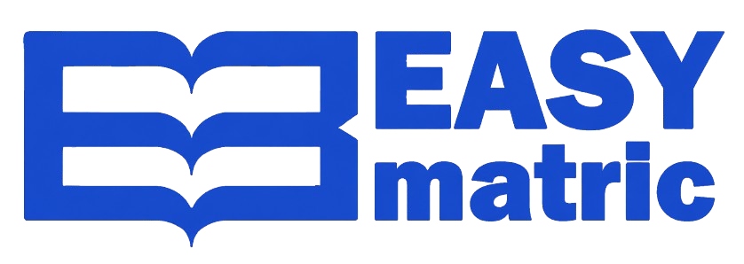

Una plataforma diseñada para conectar a toda la comunidad educativa de manera eficiente.
Autogestión total desde cualquier lugar para facilitar el acceso a la educación.
Herramientas avanzadas para el control total del proceso institucional.
Sigue estos pasos para completar tu proceso en tiempo récord.
Crea tu perfil único en la plataforma para centralizar tu información.
Explora y elige la institución académica que mejor se adapte a tus metas.
Digitaliza y sube tus archivos de forma segura. Adiós al papel.
Nuestro sistema y la institución validan tu información rápidamente.
Monitorea tu avance y descarga tu comprobante de matrícula oficial.